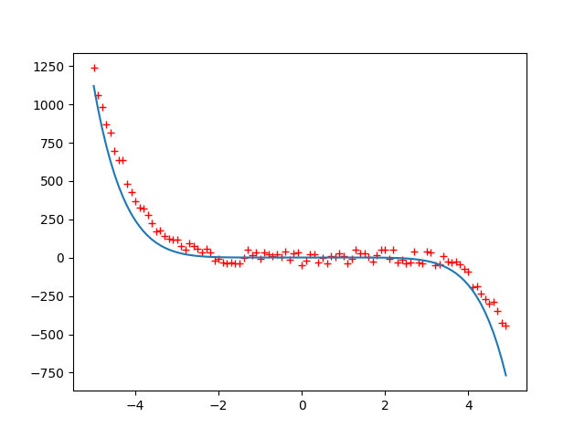

Gradient descent
Gradient descent is an iterative method of optimization which is used to search for a local minimum
of a differentiable function. It is used intensively in machine learning algorithms to find the
minimum of a cost function. The idea is to take steps in opposite direction of the gradient of a
function in the current point since this is the direction of steepest descent
(https://en.wikipedia.org/wiki/Gradient_descent). Gradient descent is used at least in neural networks,
linear and polynomial regression, as well as in logistic regression.
Basically, the idea is to find the partial derivatives of a function – typically of a cost function,
compute the gradients and then update the weights of a cost function. Let’s consider polynomial
regression. To find parameters of a function which guarantee best fit for the empirical data one
can use the gradient descent algorithm. In polynomial regression the cost function is typically
defined as follows:
$$J=1/2n \Sigma_{i=0}^n(y_i-\Theta x_i)^2$$
The gradient is:
$$\frac{\partial J}{\partial \Theta}=1/n \Sigma_{i=0}^n (y_i-\Theta x_i)(-x_i)$$
And finally, the update rule is:
$$\Theta=\Theta - \alpha 1/n \Sigma_{i=0}^n(y_i-\Theta x_i)(-x_i)$$
Where $\alpha$ is a learning rate.
In the figure below we show an example of how polynomial regression can be used to fit the empirical data:
The original function that was used to generate the data is $y=-0.3x^5+0.5x^4+0.5x^3+x^2+0.6x$
The hardest part is to assign the initial values for the coefficients, specify the learning rate, and choose appropriate $\alpha$ value.
The source code for the polynomial regression is shown below:

from random import uniform
from math import sin
from numpy import arange
from numpy import dot
from matplotlib import pyplot as plt
import numpy as np
from math import *
def generate_sequence(n, step=1):
for i in arange(-n, n, step):
yield 0.5*i*i*i*i+0.5*i*i*i+1*i*i+0.6*i
gen = generate_sequence(5, 0.1)
seq = []
for elem in gen:
elem += uniform(-50, 50)
seq.append(elem)
x = arange(-5, 5, 0.1)
x = np.array(x)
bias = np.repeat(1, int(10/0.1))
x1 = np.vstack((x, x*x))
x2 = np.vstack((x1, x*x*x))
x3 = np.vstack((x2, x*x*x*x))
x4 = np.vstack((x3, x*x*x*x*x))
x5 = np.vstack((x4, x*x*x*x*x*x))
x6 = np.vstack((x5, x*x*x*x*x*x*x))
x7 = np.vstack((x6, bias))
x = np.transpose(x7)
y = seq
theta = [0, 0, 0, 0, 0, 0, 0, 1]
def cost_function(theta, x, y):
h = np.dot(x, theta)
n = np.shape(h)[0]
d = np.transpose(y) - h
return np.dot(np.transpose(d), d)/(2*n)
def d_cost_function(theta, x, y):
h = np.dot(x, theta)
n = np.shape(h)[0]
d = np.transpose(y) - h
return -1*np.dot(np.transpose(d), x)/n
epsilon = inf
iter = 0
learning_rate = 0.0000000000001
while epsilon > 0.01:
c1 = cost_function(theta, x, y)
theta = theta - learning_rate * d_cost_function(theta, x, y)
c2 = cost_function(theta, x, y)
epsilon = c1 - c2
iter += 1
x = arange(-5, 5, 0.1)
x = np.array(x)
x0 = arange(-5, 5, 0.1)
bias = np.repeat(1, int(10/0.1))
x1 = np.vstack((x, x*x))
x2 = np.vstack((x1, x*x*x))
x3 = np.vstack((x2, x*x*x*x))
x4 = np.vstack((x3, x*x*x*x*x))
x5 = np.vstack((x4, x*x*x*x*x*x))
x6 = np.vstack((x5, x*x*x*x*x*x*x))
x7 = np.vstack((x6, bias))
x = x7
plt.plot(arange(-5, 5, 0.1), seq, 'r+')
plt.plot(x0, np.dot(np.transpose(theta), x))
plt.show()